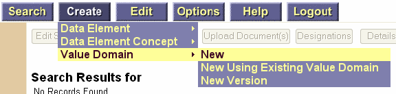
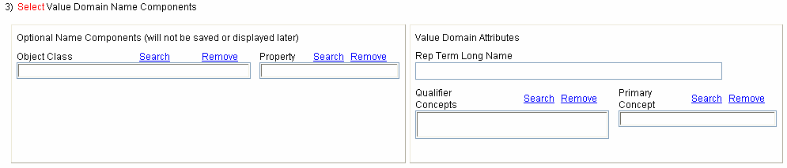
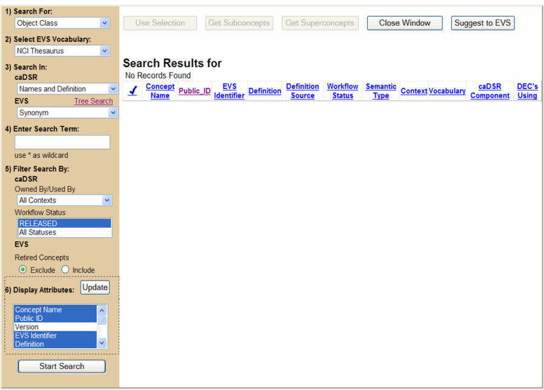
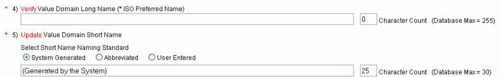
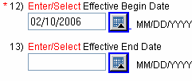
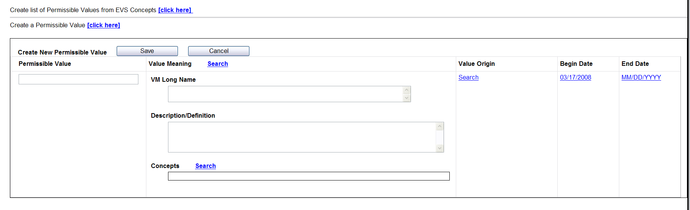
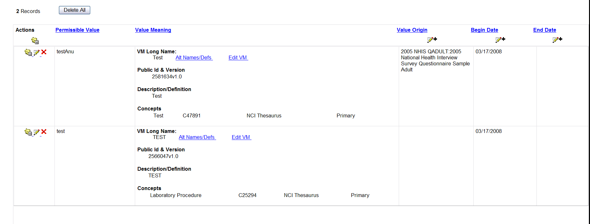
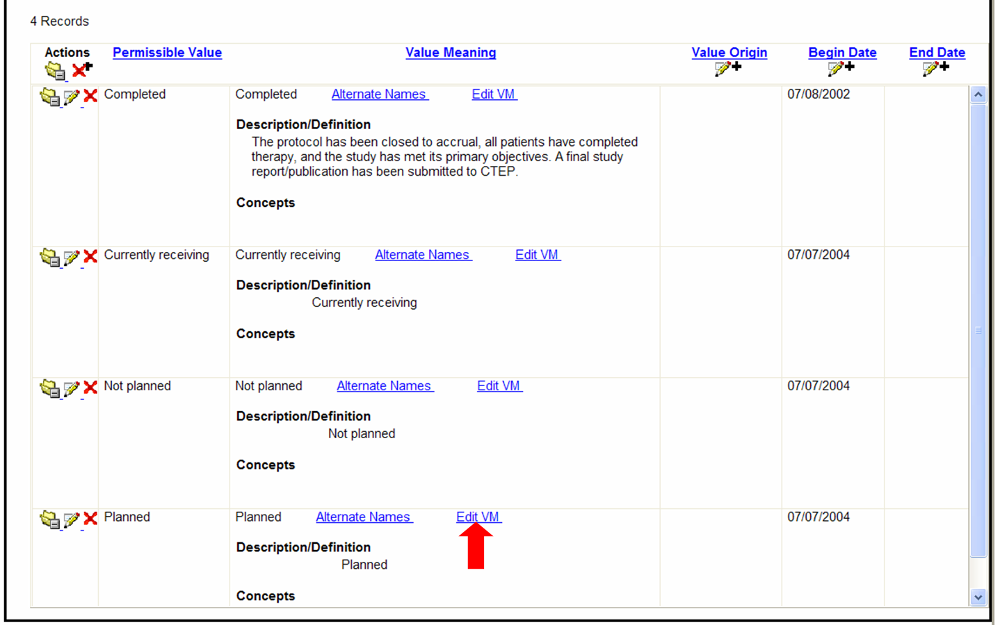
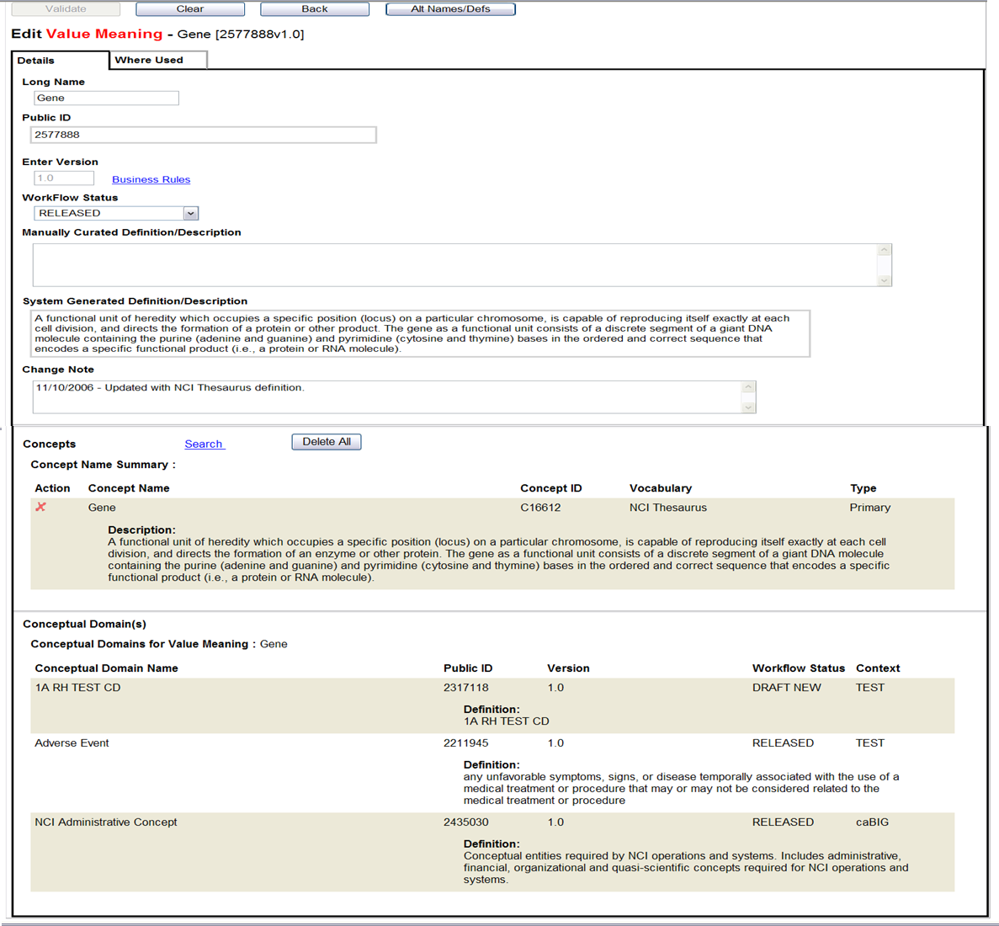

A Value Domain (VD) is a set of Permissible Values by which a Data Element can be defined. Value Domains can be Enumerated or Non-Enumerated. Enumerated Value Domains are specified by a list of Permissible Values. Non-Enumerated Value Domains are specified by a description.
The Curation Tool provides you with the ability to create and edit Value Domains, validate the Value Domains' attributes, and submit (i.e. store) the Value Domains into the NCI's Cancer Data Standards Repository (caDSR) database.
i New for CDE Curation Tool Version 3.2: The Create and Edit Value Domain screens have two tabs, one for the details of the Value Domain and another tab specifically for Permissible Values. The Value Domain Details tab houses all attributes for the VD itself. The Permissible Values tab is where actions specific to Permissible Values (Enumerated) and Referenced Values (Non-Enumerated) are made.
Search Value Domains
In addition to the standard CDE Curation Tool search filters, Value Domain searches can be filtered by Version (All, Latest, and Exact), Type (Enumerated or Non-Enumerated), Conceptual Domain, and Data Type (Alphanumeric, Boolean, etc).
Search Filters:
- The text field for entering an Exact Version is located next to the 'All' and 'Latest' Version radio buttons in the Search interface. Version number should be entered as a positive number, with or without a decimal.
- Filter by Value Domain Type by selecting the checkbox labeled Enumerated or Non-Enumerated.
- Filter by a specific Conceptual Domain by selecting the desired Conceptual Domain from the drop-down list in the 'Filter By' section of the Search interface.
- Filter by Data Type by selecting the desired Data Type from the drop down list.
Create New Value Domain
The primary functions of the CDE Curation Tool are accessed via the dark blue Navigation Bar at the top of each screen. To begin the Create New Value Domain process, Select from the Navigation Bar at the top of the page.
You may also want to create a new Value Domain using an existing Value Domain as a template or create a new version of an existing Value Domain. Both of these options can be accessed via the menu in the Navigation Bar.

FIGURE 1
Navigation Bar on the Search Screen

FIGURE 2
Edit/Create Value Domain Screen
Edit a Single Value Domain
You may only edit Value Domains in a Context where you have WRITE permission.
Search for and select one Value Domain in the Search Results table and click the button. Clicking the Edit Selection button will take you to the Edit Value Domain screen. Attributes that are not editable are grayed out.
Edit Multiple Value Domains
You may edit selected attributes of multiple Value
Domains at once. This is called block editing and can
only be done in a Context where you have WRITE
permission. Search for and select multiple Value
Domains in the Search Results table and click the
button to perform simultaneous edits on the
selected Value Domains.
The following attributes are editable for a group (block) of Value Domains:
- Rep Term Concepts
- Conceptual Domain
- Workflow Status
- Version
- Data Type
- Effective Begin Date
- Effective End Date
- Unit of Measure
- Display Format
- Minimum Length
- Maximum Length
- Low Value
- High Value
- Decimal Place
- Classification Scheme/Classification Scheme Items
- Origin
- Change Note
i Existing data for any of the selected Value Domains is not displayed on the block edit page. Classification Schemes (CS) and Classification Scheme Items (CSI) are an exception. CSs and CSIs that are added will be added to all Value Domains involved in the block edit. CSs and CSIs that are removed will only be removed from the Value Domains where they originally existed. All other changes to attributes on this page will change the corresponding attribute in all the Value Domains involved in this edit. Attributes that cannot be block edited are grayed out.
Value Domain AttributesWhen creating or editing a Value Domain, you have the ability to view, create or change the following attributes. The asterisk (*) denotes a required field when creating or editing a Value Domain.
Select a Context
As a CDE Curation Tool user you have read and write permissions in at least one Context of the caDSR. You may only create new Value Domains in a Context where you have WRITE permissions. Select the desired context from the drop down list underneath 1) Select Context.

FIGURE 3
Select a Context
i NOTE: you must have WRITE permissions within a Context to create a new Value Domain in that Context.
Select a Value Domain Type
Enumerated or
Non-Enumerated
An Enumerated Domain is a Value Domain that is
specified by a list of Permissible
Values. An example of an Enumerated Value Domain is
CountryValue:U,C,M. The Value Domain of Country Value
is specified by a list of Permissible Values (U means
USA, C means Canada, and M means Mexico).
A Non-Enumerated Value Domain is specified by a description
rather than a list of Permissible Values. A
Non-Enumerated Value Domain requires a name, a
definition, an identifier, and a description of
appropriate values. An example of a Non-Enumerated
Value Domain (taken from ISO/IEC 11179) is
'Probabilities-5 significant digits', with a
description of 'all real numbers greater than 0 and
less than 1 represented with 5-digit precision' and a
precision of '5 digits to the right of the decimal
point'.

FIGURE 4
Select a Value Domain Type
Name a Value Domain
The ISO/IEC 11179 Standard describes a Value Domain as a set of values. A Data Element is associated with only one Value Domain and the name of the Value Domain describes all of the data values that are included in that domain.
Representation
Term
The ISO/IEC 11179 Standard describes a representation
class term as 'a mechanism by which the functional
and/or presentational category of an item may be
conveyed to the user'. Examples of representation class terms include:
amount, average, count, code, date, measure, name, number, quantity and rate.
For the example of PersonPlaceOfBirth, a Representation Term is Value.
The Object Class, Property, Representation Term Qualifier Concepts and Primary Concept are used to facilitate the naming of the Value Domain. Although each of these act as building blocks for the Value Domain's name and definition, only the Representation Term Concepts are captured as being related to the Value Domain. The Object Class and Property will not be captured therefore they will not appear when editing the Value Domain.
Search for Building Blocks
Searching for building blocks is very similar to searching for any other Administered Component. The first step in naming a Value Domain is to search for and choose the Primary and Qualifier Concepts that will ultimately comprise the Representation Term Long Name. You may restrict your search to exclude Retired Concepts, or you may include all Concepts in your search. This option is available on the Search screen for all building blocks.

FIGURE 5
Search for Building Blocks
The first step in naming a Value Domain Representation is to search for and choose the Qualifier and Primary Concepts for Rep Term that will ultimately comprise the Value Domain Long Name. Click the Search hyperlink located next to the desired building block. The building block Search window will be displayed.
i The Representation Term attributes will be saved or displayed later.
Search for and Select Primary Concepts via Term Search
Searching for building blocks using the Term Search is very similar to searching for any other Administered Component.

FIGURE 6
EVS Term Search Screen
Select Building Blocks using the
Term Search:
- Select an EVS Vocabulary to search from the drop down list ( ).
- Select fields to Search In the caDSR and EVS from the drop down lists.
- Enter a search term in the text box.
- Select other search filters such as Context, Workflow Status, whether to include Retired Concepts, and EVS Source.
- Select and Update the Display Attributes.
- Click the button.
- Once the Search Results are displayed, check the checkbox ( ) next to the desired term.
- Click the button to update the building block with the selected Concept and to return to the VD screen.
Search for Building Blocks (Primary and Qualifier Concepts) via Tree Search
You can also search for Concepts in the NCI Thesaurus portion of EVS using a tree-based search. To access the tree-based search, click the Tree Search hyperlink in the ‘Search In:’ section of the Search screen.

FIGURE 7
Building Blocks Search via Tree
Search Building Blocks using the Tree
Search:
- Select an EVS Vocabulary to search from the drop down list ( ).
- Click on the Tree Search link located next to the EVS drop down box.
- Click the hyperlink of a desired Concept. The Concept will be displayed in the Search Results.
- Select the desired term by selecting the checkbox ( ).
- Click the button to update the building block with the selected Concept and return to the VD screen.
Use the Tree Search hyperlink to access a tree-style search for Concepts. The NCI Thesaurus Root Concepts will appear on the left side of the screen. Each Root Concept may have one or more Subconcepts. A Concept's Subconcepts may be viewed by clicking on the plus sign next to the Concept name. Some Subconcepts will have Subconcepts of their own which may be seen by clicking on a plus sign that appears next to the Subconcept name. If a plus sign is not present, the Subconcept has no Subconcepts of its own.
To select a Concept from the tree, click on the hyperlinked name. The Concept's details will appear in the Search Results window to the right. The Concept may appear more than once if it has multiple definitions. There will be one row for each definition. If no definition is associated with the Concept, the definition field will read ‘No Value Exists.’
When a Concept is selected from the Search Results table, several options are enabled. The Concept may be used for your building block by clicking on the button above the search results. A Concept's Subconcepts may be retrieved to the Search Results area by clicking on one of the selections from the button. You may get only the immediate Subconcepts or all Subconcepts regardless of how far down the tree they may be. A third option is to retrieve all of the selected Concept's Superconcepts by clicking the button.
i When selecting a Concept to use as an Object Class, Property or Qualifier, it is important to remember that the caDSR database has a 30 character limit on building blocks. If you choose a Concept from the NCI Thesaurus or Metathesaurus that is LONGER than 30 characters, the CDE Curation Tool will automatically truncate that Concept to 30 characters.Verify the Long Name and Short Name
The CDE Curation Tool automatically generates
suggested drafts of the Value Domain Long Name and Short Name.
These suggestions are composed of the building blocks
you selected in the previous step. The Long Name
field contains the full names of the selected
building blocks (Object Class, Property, and Rep Term).
The Short Name contains the
first four letters of the selected building blocks
separated by the character '_'.
There are three options for creating a Value Domain
Short Name. It is strongly suggested that you accept
the default System Generated Short Name. This name
will be a combination of the Rep Term Public ID and
Version, although the Short Name field will simply
say (Generated by the System). You may
select an Abbreviated Short Name. This Short Name
type consists of the first four letters of each
building block Concept selected, separated by the
character '_'. If the Short Name is longer than 30
characters it will be truncated to 30 characters. The
final Short Name option is Existing Name (editable).
When you choose this option you type a Short Name into
the field, up to the 30 character limit. If you did not
select Rep Term Concepts you must use the
Existing Name type for Short Name.

FIGURE 8
Verify Long Name and Short Name
i A character count is displayed because there
is a caDSR database limit for Long Name (* ISO
Preferred Name) and Short Name.
i The caDSR database length limit for Long
Name is 255 characters. The caDSR database length
limit for Short Name is 30 characters. Context
Administrators may choose to set additional length
limits (not enforced by this tool) if desired.
Define a Value Domain
The CDE Curation Tool automatically generates a draft definition composed of the definition(s) of the selected Object Class, Property and Representation Term separated by the character '_'. You may edit the definition by entering text in the definition text box.
Search for a Conceptual Domain
What is a Conceptual
Domain?
The ISO/IEC 11179 Standard describes a Conceptual Domain as
a set of all possible, valid value meanings of a Data
Element Concept expressed without representation.
Conceptual Domains are plural, object oriented,
lacking in representation, and may be associated with
more than one Value Domain. For the example given
above with the Data Element Concept of
PatientPlaceOfBirth, a Conceptual Domain is
Country.
When the Search link is activated, all Conceptual
Domains in the selected Context are displayed. The
user has the option to change the Context on the
Search screen by using the drop down list. The records will change
accordingly.
If a Context has not been selected, results will not be
displayed and the user will have to do at least one
of the following actions:
Search for a Conceptual Domain
by performing one of the following:
- Click Start Search (all Conceptual Domains for all Contexts will be displayed).
- Enter a Search Term, select a Context, and then click Start Search (results matching the term and context will be displayed).
- Select a Context then click Start Search (all Conceptual Domains for the selected Context will be displayed).

FIGURE 9
Search for a Conceptual Domain
Select a Workflow Status
A Workflow Status is a designation of the position in
the lifecycle of a Value Domain. Select a Value
Domain's Workflow Status by choosing from the list of
available Workflow Statuses in the drop down list.
Many Workflow Statuses are listed and defined on the
NCI Center for Bioinformatics
Business Rules page. The Versioning Business Rules
are also accessible from within the CDE Curation Tool
by clicking on the Business Rules hyperlink next to
the Version field.
Please note that a Value Domain cannot have a
Workflow Status of Released unless its Rep Term also
has a Released Workflow Status. It should be a
very rare for this to be a problem. However, if it
does occur you must update the Rep Term Workflow
Status using the caDSR Administration Tool as there
is no mechanism for changing the Rep Term Workflow
Statuses in the CDE Curation Tool.

FIGURE 10
Workflow Status and Version
Enter a Version
The default version for a New Value Domain is 1.0, but the text box is editable.
Versioning Business Rules are defined on the NCI Center for Bioinformatics Business Rules page. The Versioning Business Rules are also accessible by clicking on the Business Rules hyperlink next to the Version text field.
Block Versioning Value Domains
To change the version for a group (block) of Value Domains:
- Check the box labeled "Check box to Create New Version"
- Check either the box labeled "Point Increase" or "Whole Increase"

FIGURE 11
Block Versioning Value Domains
Increases the version number of each Value Domain in the group by a tenth. (i.e. If your group of Value Domains have versions of 4.0 and 1.23 the version would be changed to 4.1 and 1.3 respectively).
Whole Increase
Increases the version number of each Value Domain in the group to the next whole number (i.e. If your group of Value Domains have versions of 4.0 and 1.5 the version would be changed to 5.0 and 2.0 respectively).
i Versioning edits made during a block edit will be made to the new versions of the selected Value Domains. The edits will not be made to the originally selected Value Domains. A list containing all versioning rules within the caDSR can be found at the NCI Center for Bioinformatics versioning page. The Versioning Business Rules are also accessible from within the CDE Curation Tool by clicking on the Business Rules hyperlink next to the Version field.
Select a Data Type
Select a Data Type from the dropdown list. A description and comment is displayed for each Data Type when selected.
Enter/Select the Effective Begin and End Dates
The Effective Begin Date will default to the current date.
This may be changed in two ways; enter the date in the text box using the
format MM/DD/YYYY or click the calendar icon and
select the desired date.
You may select or enter an Effective End Date
the same way if desired. If you have
selected a Workflow Status of Retired Archived,
Retired Deleted, or Retired Phased Out then you must
enter an Effective End Date. If an Effective End Date is selected
that is before the Effective Begin Date, an error will be returned
during the validation process.

FIGURE 12
Effective Begin Date and Effective End Date
Enter/Select Effective Begin Date or Effective End Date:
- Enter the date (MM/DD/YYYY) in the ‘ Enter/Select Effective Begin Date’ text field. OR
- Click the calendar icon
 and
select the desired date.
and
select the desired date.
Select a Unit of Measure (UOM) and Display Format Values
Enter/Select Unit of Measure (UOM) and Display Format Values:
- Select the desired Unit of Measure (UOM) from the drop down list.
- Select the UOM Display Format from the drop down list.
- Enter the Minimum and Maximum length in the appropriate text fields.
- Enter the Low Value/High Value (for number data type only).
- Enter the Decimal Place.
Select Classification Schemes and Classification Scheme Items
Classification Schemes (CS) are a way of grouping
Value Domains based on common characteristics.
Classifications also add information about Value
Domains that is not easily included in definitions.
For example, you might want to classify Value Domains
as belonging to the Classification Scheme Type of
Disease. A Classification Scheme Item (CSI) is a
component of content in a Classification Scheme (i.e.
Liver Cancer).
The parent-child relationship of Classification
Scheme Items are displayed in a hierarchical order
and indicated by indentations. Child Classification
Scheme Items are indented farther than their parent.
Select a CS/CSI for your Value Domain:
- Select a Classification Scheme from the drop down list. The associated Classification Scheme Items are displayed in hierarchical manner.
- Select Classification Scheme Items from the list of items for the selected Classification Scheme. The selected Classification Scheme Items are added to the Associated Classification Scheme Items list in the same hierarchical order.
i Note that when you select a Classification Scheme
Item that has parents, the parent and
grandparent Classification Scheme Items will also be
selected.
i Classification Schemes and Classification
Scheme Items may be removed from the Value Domain by
highlighting a Classification Scheme or the
Classification Scheme Item and clicking the
corresponding button.
Block Editing Classification Schemes and Classification Scheme Items
Classification Schemes and Classifications Scheme
Items can be edited for a group (block) of Value Domains:
- Select the desired Classification Scheme to populate the Associated Classification Scheme Items list.
- Select a Classification Scheme Item to populate the Value Domain's containing selected Classification Scheme Items list.
i Users with write permissions to multiple
Contexts must select a Context first from the drop
down menu when block editing Value Domains
from multiple Contexts. Only Classification Schemes
in the selected Context will be able to be selected
or updated. However, Classification Schemes and
Classification Scheme Items will be shown for all
contexts regardless of user's write permission.
i Classification Schemes can only be selected
from the Context that is currently selected for the Block Edit.
i To remove a CS or CSI from all Value Domains involved in
the Block Edit, select the desired CS or CSI and click the
corresponding button.
Create Contacts
All Administered Components can be assigned a Contact.
Contacts may either be an organization or a person.
Contacts can be created for a Value Domain by clicking the
button.
The Create Contacts window will appear.
Create a new Contact:
- Create Contact Rank Order by entering a maximum of 3 numbers in the text field.
- Select the Contact Person or Organization radio button.
- Select the Person Name or Organization Name from the drop down list.
- Select the Contact Role form the drop down list.
- Select Communication Type from the drop down list.
- Create the Call Order by entering a maximum of 3 numbers into the text field.
- Create the Communication Information by entering a maximum of 255 characters in the text field.
- Click the button.
i The newly created Contact information is displayed in the 'Selected Communication Attributes' table. This information can be edited or removed by selecting the desired Contact and clicking the or the buttons.

FIGURE 13
Contact Attributes
Create a Contact Address for the Contact:
- Select the Address Type from the drop down list.
- Create Primary Order by entering a maximum of 3 numbers into the text field.
- Create Address Line 1 and Address Line 2 information by entering text in the field provided.
- Create the City, State, Country, and Postal Code by entering text into the appropriate text fields.
- Click the button.
i The newly created Contact information is displayed in the 'Selected Communication Attributes' table. This information can be edited or removed by selecting the desired entry and clicking the or the buttons.

FIGURE 14
Contact Address Attributes
When finished creating, editing or removing Contact attributes, click the button at the top of the window. A message will be displayed stating the Contact information has been created but will not be saved until the Value Domain is submitted. Click OK on the message. You will be returned to the Value Domain screen. The Contact Name will be displayed in the 'Select Contacts' field.
Contacts can be Edited or Removed by highlighting the desired Contact and clicking the or the buttons.
Select the Origin
Origin is the source of a Value Domain. Select the Origin from the drop down list.
Create a Change Note
A change note can be created to include any additional remarks on the Value Domain.
Permissible Value AttributesOverview of Permissible Values
The Permissible Values tab is new for Version 3.2 of the CDE Curation Tool. This tab is where all actions related to Permissible Values (Enumerated VD) or Referenced Values (Non-Enumerated VD) are performed.
The Conceptual Domain (CD) selected on the Value Domain Details tab is displayed on the PV page. If the CD needs to be changed, this can be performed on the VD Details screen.

FIGURE 15
Permissible Values Tab
Select a Parent Concept for EVS Referenced Value Domains (Non-Enumerated Only)
Non-Enumerated Value Domains may be referenced to Concepts
from EVS.

FIGURE 16
Referenced Values
Create a Referenced Value from EVS:
- Click the Search Parent link. The Parent Concept Search Window will be displayed.
- Select an EVS Vocabulary from the drop down list.
- For Term Search, select the desired 'Search In:' from the drop down list, enter the Search Term, select desired Display Attributes, and click the button.
- For Tree Search, Select the Tree Search link and continue to use the tree search as previously described for searching Concepts from EVS.
- Select a Concept and click the button.

FIGURE 17
EVS Parent Concept Search Screen
The selected Concept is pasted in the 'Selected Non-Enumerated Value Domain Referenced Concept' field on the Permissible Values page.
Select a Parent Concept for Non-EVS Referenced Value Domains (Non-Enumerated Only)
Non-Enumerated Value Domains may also be referenced to Concepts
from vocabulary sources other than EVS.
To Create a Referenced Value from a Non-EVS source:
- Click the Search Parent link. The Parent Concept Search Window will be displayed.
- Select the Search Type of 'Non EVS' by selecting the appropriate radio button.
- Enter a Reference Name.
- Enter a Reference Document Text.
- Enter a Reference URL (must begin with http://).
- Click the button.
The selected Concept is pasted in the 'Selected Non-Enumerated Value Domain Referenced Concept' field on the Permissible Values page.

FIGURE 18
Non-EVS Referenced Value
Select a Parent Concept to Constrain Values from a Non-EVS Source (Enumerated Only)
Enumerated Value Domains may include Permissible Values constrained to a Parent Concept from a source other than EVS.
Search for a Parent Concept from a Non-EVS source to constrain Permissible Values:
- Click the Search Parent link. The Parent Concept Search Window will be displayed.
- Select the Search Type of 'Non EVS' by selecting the appropriate radio button.
- Enter a Reference Name.
- Enter a Reference Document Text.
- Enter a Reference URL (must begin with http://).
- Click the button.
The selected Concept is pasted into the Parent Concept field.
The details of the Parent Concept can be viewed by clicking the button.
i If you wish to delete a Parent Concept,
highlight the desired concept and click .
Select Values Constrained to a Parent Concept from EVS (Enumerated Only)
Enumerated Value Domains may be referenced to Concepts by
constraining values to a Parent Concept from EVS.
FIGURE 19
Select Values Constrained to a Parent Concept
Search for a Parent Concept from EVS to constrain Permissible Values:
- Click the Search Parent link. The Parent Concept Search Window will be displayed.
- Select the Search Type of 'EVS' by selecting the appropriate radio button.
- Select an EVS Vocabulary from the drop down list.
- For Term Search, select the desired 'Search In:' from the drop down list, enter the Search Term, select desired Display Attributes, and click the button.
- For Tree Search, Select the Tree Search link and continue to use the tree search as previously described for searching EVS.
- Select a Concept and click the button.
The selected Concept is pasted into the Parent Concept field.
Once a Parent Concept is selected from EVS, you may select concepts to use as constrained values. To do so:
- Highlight the desired Parent Concept.
- Click the button. The selected Parent Concept will be displayed in the Search Results table.
- Select the checkbox next to the Parent Concept.
- Click the button. NOTE: Selecting All Subconcepts will return all children and grandchildren of the concept and make take awhile.
- Select the checkbox next to the desired Subconcept(s).
- Click the button. NOTE: If duplicate concepts are selected, a message will appear. Click OK to use the NCI Concept or Click Cancel to manually de-select unwanted duplicates.
- Click the button. The selected Subconcepts are pasted into the Permissible Values table.
Create New Permissible Values (Enumerated Value Domains Only)
The ISO 11179 Standard describes Permissible Values (PV)
as the exact names, codes and text that can be stored
in a data field in an information management system.
For the example of PatientPlaceOfBirth, Permissible
Values are 'U means USA, C means Canada, M means
Mexico'.
New Permissible Values can only be created if the
context of the selected Conceptual Domain is the same
as the context selected for this Value Domain and if
the Value Domain is not referenced to a Parent
Concept.
Permissible Values can be created searching the caDSR for
existing Value Meanings or by searching EVS for
concepts to use as Value Meanings. If you do not find the desired concept(s)
in EVS or caDSR, you also have the ability to create a new
Permissible Value by entering text into the Value Meaning
and Description/Definition fields.
Select a Value Meaning from caDSR (Enumerated VD Only)
As stated above, you may search caDSR for an existing Value Meaning.
To start this process, click the [click here] link next to
Create a Permissible Value. Then, click the Search link next to Value Meaning.

FIGURE 20
Search caDSR for a Value Meaning
Select an existing Value Meaning from caDSR:
- Enter a Search term.
- Select a Conceptual Domain to use as a search filter or keep the default to search All Domains.
- Click to display existing Value Meanings in the selected Conceptual Domain.
- Select a desired record.
- Click the button. Clicking this button will close this window and populate the Create New Permissible Value screen with the selected information.
- Enter text in the field provided for the Permissible Value name or leave this field blank. If the PV name is left blank, the Value Meaning name will be pasted here when the Save button is clicked.
- Click the button.
- The newly created PV will be displayed in the PV table.
Select a Value Meaning from EVS (Enumerated VD Only)
You may also search EVS for Concept(s) to use as a Value Meaning(s).
To start this process, click the [click here] link next to
Create list of Permissible Values from EVS Concepts. Then, click the Search link next to Concepts.
The Search EVS window will display. Search for concepts to use as Value Meanings the same way for other EVS Searches performed in the Curation Tool. Remember to select an EVS Vocabulary, enter a search term or use the tree search feature. When all desired records are checked, click the button.
The selected concepts are pasted into the Permissible Values table.
Create a New Value Meaning (Enumerated Only)
If you cannot find a desirable Value Meaning from caDSR or EVS, you may choose to create a New Value Meaning.
Create a New Value Meaning:
- Click the [click here] link next to Create a Permissible Value.
- Enter text in the Permissible Value text box.
- Enter text in the Value Meaning text box.
- Enter text in the Description/Definition text box.
- Click the Search link to select an Origin.
- The Begin Date is defaulted to today's date. This date can be changed by clicking the link and selecting a new Begin Date from the calendar.
- Select an End Date by clicking the MM/DD/YYYY link and selecting the desired End Date from the calendar.
- Click the button. The newly created Permissible Value is pasted into the Permissible Value table.

FIGURE 21
Create a New Value Meaning
Edit Permissible Values (Enumerated Only)
When Permissible Values are selected for an Enumerated Value Domain, several edit actions can be performed within the PV table.

FIGURE 22
Permissible Values Table
- The table headings can be clicked to sort each column.
- Value Origin, Begin Date, or End Date can be added or changed for all Permissible Values by clicking the icon.
- Individual Permissible Values can be removed by clicking the
 icon.
icon.
- Individual Permissible Values can be edited by clicking the
- Editing the Permissible Value Name.
- Adding a Concept by clicking the Concepts search link.
- Deleting a Concept by clicking the icon
next to the Concept.
- Changing the Value Meaning Name or Description/Definition for manually created Permissible Values.
- Adding an Origin by clicking the Search link. The origin window will be displayed. Select the desired Origin and click the button.
- Changing the Begin Date by clicking the default link (set to today's date) and selecting a date from the calendar.
- Adding an End Date by clicking the MM/DD/YYYY link and selecting a date from the calendar.
- Edits and Deletions are retained by clicking the
 icon.
icon.
- Original Permissible Values and Value Meanings are restored by clicking the
 icon.
icon.
iNew for Curation Tool v3.2: Alternate Names, Definitions and Classifications can be added to Value Meanings.
These actions are performed by:
- Click the Alternate Names link for the desired Value Meaning located in the Permissible Values table. The Alternate Names and Definitions window is displayed.
- To add an Alternate Name, click the button.
- Enter text into the Name text box.
- Select a Type from the drop down list.
- Select a Language from the drop down list.
- Select a Class Scheme Item from the list located at the bottom of the window. A text filter is provided if needed. Hover over text to see a tool tip for each item.
- Click the button.
- Click the button. The Alternate Name with associated Classification is displayed.
- To add an Alternate Definition, click the button.
- Enter text into the Definition text box.
- Select a Type from the drop down list.
- Select a Language from the drop down list.
- Select a Class Scheme Item from the list located at the bottom of the window. A text filter is provided if needed. Hover over text to see a tool tip for each item.
- Click the button.
- Click the button. The Alternate Definition with associated Classification is displayed.

FIGURE 23
Value Meaning Alternate Name and Definition
- Names or Definitions can be edited by clicking the
 icon.
icon.
- Names or Definitions can be removed by clicking the icon.
- You can View by Name/Definition or View by Classifications by clicking the appropriate tab.
- Names and Definitions can be sorted by clicking the or buttons.
- The button will restore the window with the original values.
- The button will return you to the Permissible Values table.
- Associations between Alternate Names/Definitions and Classifications can
be removed by clicking the icon in the edit mode.
i Any additions or deletions made in the Alternate Names and Definitions window will not be saved until the Value Domain is Validated and then Submitted to the caDSR.
Edit Value MeaningsiNew for Curation Tool v4.0.0.0: Value Meanings can now be edited.
Edit Value Meaning Information
To edit a Value Meaning, click the Edit VM link found to the right of the Value Meaning in the Permissible Values table.

FIGURE 24
Edit VM Link
The Edit Value Meanings screen has two tabs. The Details tab displays the details of the selected Value Meaning. Details include: Definitions/Descriptions, Change Notes, and any Concepts associated with that Value Meaning. The Where Used tab displays which Value Domains, Case Report Forms and Data Elements use the specified Value Meaning. This tab is for viewing purposes only.

FIGURE 25
Edit VM - Details Tab
The following information is editable on the Details tab:
next
to the desired concept. or
or  .
The Concept Name Summary and System Generated Definition/Description fields
will adjust according to the order of concepts.
.
The Concept Name Summary and System Generated Definition/Description fields
will adjust according to the order of concepts. The Where Used tab displays which Case Report Forms, Value Domains and Data Elements use the selected Value Meaning.

FIGURE 26
Edit VM - Where Used Tab
When all edits are completed, click the button. Note: Validate is enabled on this page for Administrators only.
If all fields are Valid on the Validation page, click the button.
The Value Meaning has been edited and is pasted back to the Permissible Values table.
Validate/Submit Value DomainsValidate Value Domain Information
Before you can submit a new Value Domain to the
caDSR it must be in the appropriate format and have the
appropriate content and relationships between
attributes. The CDE Curation Tool provides you with a
Validation function for Creating and Editing all
available Administered Components (Data Elements,
Data Element Concepts, and Value Domains).
To begin the validate Value Domain process; click
the button at the top of the screen
or one of the Validate hyperlinks.
The Create/Edit Value Domain Validation
screen displays (in table format) the attribute, the
value or content of that attribute, and whether or
not the content is valid.
Correct Invalid Attributes
If any attributes are invalid, the validation screen
will indicate in what way the attribute is invalid.
Invalid attributes can be corrected by going back to
the Create/Edit screen and modifying the values of
the attributes.
- If all the attributes for the Value Domain are not valid, the Submit button will be disabled.
- Click the button to return to the Create (or Edit) page to correct the attributes that are not valid. Do not use your browser's back button.
Submit a New Value Domain
A new Value Domain's attributes must be valid before
it can be submitted to the caDSR. If the attributes
of your new Value Domain are all Valid, click
the button at the top left of the Create/Edit
Value Domain Validation screen. A message will appear telling you
that a New Value Domain has been created. Selecting
OK returns you to a blank Create New Value Domain
screen.
i If the attribute was not changed, the Validation Status will be 'No Change'. Attributes that were changed will display the appropriate Validation Status.